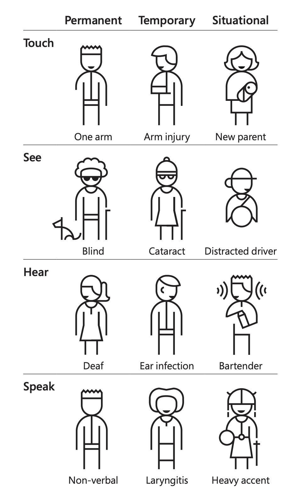
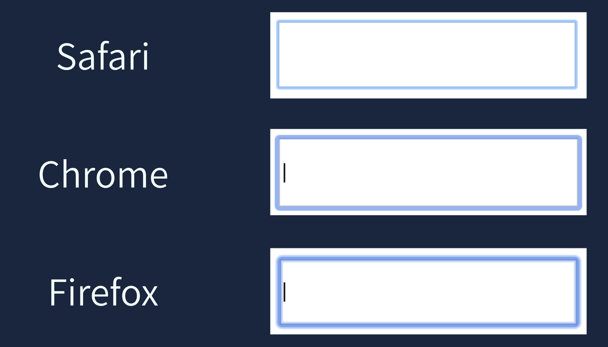
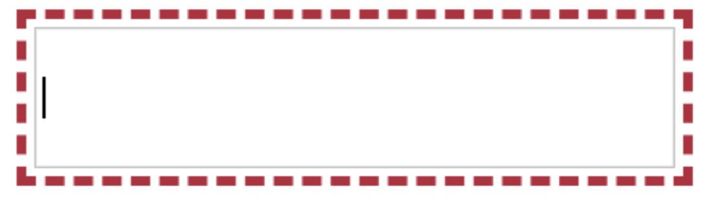

Hey! 👋🏼
Accessibility
Redi School Munich - Spring 2021
Disabilities
An illness, injury, or condition that makes it difficult for someone to do the things that other people do
- Impairements
- Participation Restriction
- Activity limitations
Disabilities
Disabilities
Mismatch between a person’s abilities and their environment
Inaccessible environments create disabilities
Being accessible is about making your website available for anyone no matter how they have to use it
WHY?
Because is the right thing to do!
The perfect user
- Two hands and 10 fingers
- Perfect vision
- No injuries, pain or illnesses
- Always in a perfect enviroment (no noise, glare and good lighting)
Each of us experiences life in a different way
Accessibility is often forgotten or disregarded
What can we do?
Semantic and structured HTML
Use the right tag in the right place
A good HTML is crucial for assistive technologies
Headings need to be in the right order
Keep a logical order of elements in your code
Alternative text
All images need an alt attribute but some of them might not need any text
Focus
Focus
input:focus {
outline-color: red;
outline-style: dashed;
outline-width: medium;
outline-offset: 2px;
}

Color and Contrast
- Color can convey your brand identity, help users understand information and much more
- Not everyone perceives color the same way
- Contrast tends to be the difference between the foreground and the background
Text
- Use simple language
- Breakdown big paragraphs
- Provide definitions for unusual words and for abbreviations
- Be as literal as possible
Media
- Don't autoplay videos
- Provide captions and transcriptions
- Give more control to the user
Testing
- Automated tools can only find around 25% of issues
- Google lighthouse, axe coconut and many other tools
- Try a screen reader
- Deactivate your mouse
Web Accessibility Standards (WCAG)
- It divides in 4 principles
- Under each principle there are guidelines
- Each guideline has success criterias
- There are 3 levels of conformance (A, AA, AAA)
To be WCAG AA compliant, you need to satisfy all success criteria of levels A and AA. For AAA, you’ll satisfy all criteria for all three WCAG levels.
WCAG Principles: Percievable
Can users perceive the content?
It includes things like color, alternative text, captions, content order, etc
WCAG Principles: Operable
Can users use UI components and navigate the content?
It includes things like proper keyboard access, no time limits, reduced motion, focus order and more
WCAG Principles: Understandable
Can users understand the content? Can users understand the interface and is it consistent enough to avoid confusion?
It includes things like simple language, consistent navigation, proper labels and instructions, and more
WCAG Principles: Robust
Can the content be consumed by a wide variety of user agents (browsers)?
It includes things like compatibility, status messages, valid HTML and more
DEMOS
Homework!
Work on your project
- Is your HTML semantic?
- Are you using headings correctly?
- Is there enough contrast?
- Run your project through one of the tools we used and fix any issue you find
Think about questions for the next session
Questions or Feedback?